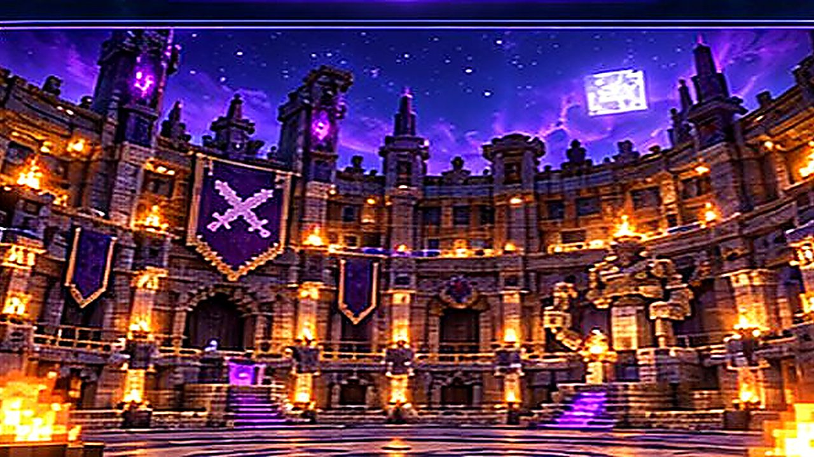

01 / MODY
Mody, które pasują do Twojej gry.
Importuj pliki JAR i zarządzaj modami. Launcher sprawdza podstawowe metadane loadera. Pełna kontrola zależności pozostaje w przygotowaniu.
Dostępne: import plików JARZobacz szczegóły ↗
ILUSTRACJA MODUŁU • MOTYW MINEVORA